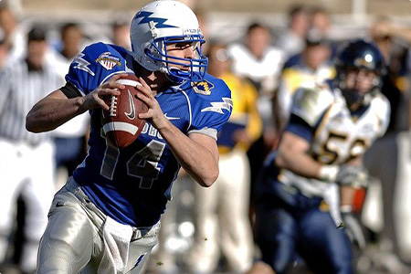

home > 사회공헌 > 활동분야
활동분야
삼천리의 따듯한 나눔경영 활동을 소개합니다.
기업의 사회적 책임을 다하고 사회와 상생하는 아름다운 활동을 이어가고 있습니다.
-
- 에너지 복지가스사랑 안전나눔
- 도시가스 사업의 전문성을 살려 에너지 취약계층에게 안전한 가스사용 환경을 만들어 줍니다. 가스안전을 저해하는 노후 배기통, 보일러, 가스렌지 등을 무상으로 점검, 보수, 교체해 주고, 사용자의 부주의로 발생할 수 있는 과열화재를 예방하기 위해 일정시간이 지나면 자동으로 가스밸브를 차단하는 가스타이머콕 설치를 지원합니다. 매년 연말에는 전국 34개 도시가스사가 함께 하는 ‘도시가스 봉사의 날’에 참여하는 등 지역사회 어려운 이웃의 에너지 복지를 향상시키는 데 이바지하고 있습니다.에너지 복지
-
- 환경보호clean day 캠페인
- 친환경 에너지 기업으로서 지역사회 산, 바다, 하천, 공원에서 깨끗한 자연환경 보존에 나섭니다. 2005년 안산시 및 인천광역시와 협약을 체결하고 수리산(안산)과 청량산(인천)에서 Clean Day를 시작한 이래 현재는 시화방조제(시흥), 청량산(인천), 오산천(오산), 지역공원(평택)에서 청정자연 보호에 힘쓰고 있습니다. 쓰레기를 수거하는 환경정화활동, 나무를 심고 우거진 산림을 만드는 식목활동, 풍성한 숲을 보존하기 위한 산불예방 캠페인 등 다채로운 활동이 진행됩니다.
-
- 사회복지사랑 나눔의 날
- 사내 다양한 자원봉사팀들이 지역사회 곳곳의 사회복지시설을 정기적으로 방문해 자원봉사활동을 진행합니다. 저소득층을 위한 무료급식 봉사활동, 거동이 어려운 장애아동과의 야외체험활동, 독거노인을 위한 사랑의 도시락 배달, 돌봄이 필요한 아동·청소년 양육 지원, 시설 환경정화활동 등 다방면에서 활동이 이루어지고 있습니다. 특히 자원봉사활동은 일회성이 아닌 장기적인 활동으로 이어지며 소외계층과의 관계를 두텁게 지속하는 데 노력하고 있습니다.
-
- 해외봉사해외봉사
- 다양한 국내 봉사경험을 바탕으로 개발도상국 어린이들의 낙후한 교육환경을 개선하는 해외봉사를 진행합니다. 베트남의 지역 초등학교를 찾아가 더위와 습기에 낡은 학교건물의 외벽을 도색하고 아이들의 꿈을 키워줄 벽화를 그립니다. 또한 깨끗한 화장실을 신축해 위생적 환경을 만들며 아이들이 지식을 쌓을 수 있는 책을 기증하고 도서실을 마련합니다. 임직원들은 직접 준비한 교육 프로그램을 진행하고 재능을 기부하며 한국의 문화를 전파하는 일일교사로 함께 하고 있습니다.
-
- 기타활동자매결연 군부대 후원
- 도시가스 사업의 전문성을 살려 에너지 취약계층에게 안전한 가스사용 환경을 만들어 줍니다. 가스안전을 저해하는 노후 배기통, 보일러, 가스렌지 등을 무상으로 점검, 보수, 교체해 주고, 사용자의 부주의로 발생할 수 있는 과열화재를 예방하기 위해 일정시간이 지나면 자동으로 가스밸브를 차단하는 가스타이머콕 설치를 지원합니다. 매년 연말에는 전국 34개 도시가스사가 함께 하는 ‘도시가스 봉사의 날’에 참여하는 등 지역사회 어려운 이웃의 에너지 복지를 향상시키는 데 이바지하고 있습니다.에너지 복지
-

- 문화 및 스포츠문화 및 스포츠 행사 후원
- 삼천리는 꿈나무를 양성해 국내 스포츠 발전에 이바지합니다. 2015년부터 초·중·고교생 골프 꿈나무들이 실력을 펼칠 수 있는 ‘KLPGA-삼천리 투게더 꿈나무대회‘를 개최하고, 장래가 유망한 아마추어 골프 선수들에게 장학금을 지원하고 있습니다. 또한 2004년부터 시민 구단 인천유나이티드를 후원해 오고 있습니다. 더불어 2014년 소치 동계올림픽에 출전한 경기도청 여자컬링팀과 소치 장애인 동계올림픽에 출전한 장애인 국가대표 선수단을 후원하는 등 비인기 종목을 지원하고, KLPGA와 함께 난치병 어린이 돕기 자선 골프대회를 개최한 바 있습니다.
-
- 천만장학회천만장학회
- 재단법인 천만장학회는 1987년 설립된 이래 다양한 장학제도를 운영하여 학업성적이 우수하지만 가정환경이 어려운 학생들의 교육을 후원하고 다양한 학술·문화 활동을 지원하고 있습니다. 천만장학회는 지난 30여년 동안 총 2,555명의 장학생과 다양한 교육기관에 140억원을 지원하며 미래인재들의 꿈과 희망을 함께 해오고 있습니다.